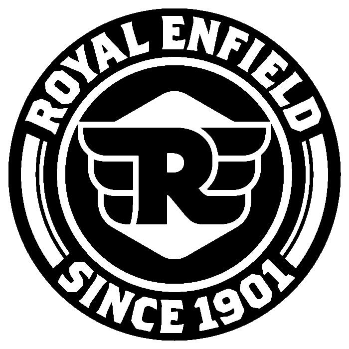

Professional Trajectory
Experience
APR 2025 - DEC 2025
Tesla Inc.
Fremont, CAManufacturing Equipment Engineer Intern
- → Led deployment of autonomous forklift platforms integrating actuators, sensors, and structural assemblies, applying DFM/DFA principles to contribute to $2.04M projected annual savings.
- → Programmed and deployed AMR path planning using a penalty-optimized Theta* algorithm in internal fleet manager tool, enabling real-time dynamic rerouting and reducing routing complexity by 83%.
- → Conducted DFMEA enhancements for AGV operations, addressing derailment root causes through PID tuning, vibration damping, and wheel-load modeling, targeting 35% downtime reduction.
- → Designed powered retractable castor-wheel drivetrain for 2,000 lb dollies, streamlining fabrication/assembly and reducing manual handling effort by 23%.
JUL 2022 - AUG 2024
Hero MotoCorp Ltd
Neemrana & Tirupati, IndiaRobotics & Manufacturing Engineer
- → Spearheaded deployment of ABB and Mitsubishi robotic arms for battery assembly, applying Lean principles to reduce cycle time by 12.4% and save $32,800 annually.
- → Integrated Allen-Bradley PLC systems with roller conveyors, establishing standard work and cycle time documentation while improving throughput by 22%.
- → Implemented TPM-driven predictive maintenance, reducing unplanned downtime by 21.4%, extending equipment lifespan by 33.6%, and saving $28,900 annually.
- → Developed vision-guided defect detection achieving 92.3% accuracy, implementing SPC standards and reducing rework costs by $23,400 annually through 8D root cause analysis.
NOV 2018 - FEB 2019

Royal Enfield Motors Limited
Chennai, IndiaIndustrial Engineering Intern
- → Applied Lean Six Sigma methodologies to identify production bottlenecks, achieving a 7% reduction in assembly time.
- → Optimized material loading automation to reduce waste by 5%.